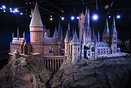
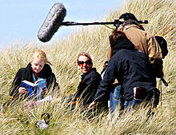

Harry Potter é uma série de sete romances de fantasia escrita pela autora britânica J. K. Rowling. A série narra as aventuras de um jovem chamado Harry James Potter, que descobre aos 11 anos de idade que é um bruxo ao ser convidado para estudar na Escola de Magia e Bruxaria de Hogwarts. O arco de história principal diz respeito às amizades de Harry com outros bruxos de sua idade, como Ron Weasley e Hermione Granger, e também com o diretor de Hogwarts Albus Dumbledore, considerado o maior dos magos, e seus conflitos com o bruxo das trevas Lord Voldemort, que pretende se tornar imortal, conquistar o mundo dos bruxos, subjugar as pessoas não-mágicas e destruir todos aqueles que estão em seu caminho, especialmente Harry Potter, a quem ele considera seu maior rival.
Enredo
Os romances giram em torno de Harry James Potter, um órfão que descobre com 11 anos que é um bruxo, que vive no mundo comum de pessoas não-mágicas, conhecidas como "trouxas". O mundo bruxo é mantido em segredo, presumivelmente para evitar a perseguição de bruxas e bruxos. Tal habilidade é inata e essas crianças são convidadas a participar de uma escola de magia exclusiva, que ensina as habilidades necessárias para ter sucesso no mundo bruxo. Harry torna-se um estudante da Escola de Magia e Bruxaria de Hogwarts e é ali onde a maioria dos eventos da série acontecem. Enquanto Harry se desenvolve através da adolescência, ele aprende a superar os problemas que ele enfrenta: mágicos, sociais e emocionais, incluindo desafios adolescentes comuns, como amizades, paixões e provas, e o grande teste de preparar a si mesmo para o confronto no mundo real que temos pela frente.

O Expresso de Hogwarts
Temática e conteúdo
Por ser uma série na qual cada livro equivale a cerca de um ano de vida do protagonista, seu conteúdo amadurece conforme Harry cresce. Os leitores que começaram a ler a saga ainda muito jovens também vão amadurecendo enquanto lêem. A estrutura da história, inclusive, torna-se mais complexa e sofisticada a cada volume. Os livros de Rowling se passam nos anos 1990, na Inglaterra "trouxa" moderna, com carros, telefones e videogames. Os problemas no mundo mágico são sólidos e reais como os do nosso mundo - preconceito, depressão, ódio, sacrifício, pobreza, morte. "Harry vai para seu mundo mágico, e este é melhor que o mundo que ele deixou? "Só porque ele encontra pessoas melhores", explica Rowling.

Maquete da Escola de Magia e Bruxaria de Hogwarts
Conclusão
As versões para cinema de Harry Potter encerraram-se com o livro Harry Potter e as Relíquias da Morte, que foi dividido em dois filmes de mais de 2 horas de duração cada um. O segundo, Harry Potter e as Relíquias da Morte - Parte II, foi lançado no dia 15 de julho de 2011, tornando-se a maior bilheteria da série e a 3ª maior bilheteria da história do cinema.
Em Junho de 2006, Rowling, anunciou no talk show britânico Richard & Judy que o capítulo fora modificado, e que um personagem "teve uma segunda chance" e dois outros que anteriormente sobreviveriam foram, afinal, mortos. Ela também disse que podia ver a lógica em "matar" Harry para evitar que outros escritores escrevessem sobre a vida dele após Hogwarts.

Evanna Lynch lendo durante as filmagens de Harry Potter and the Deathly Hallows em Pembrokeshire, maio de 2009.